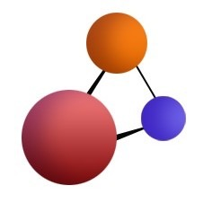

思圆笔记
身体力行，有所分享
本站源码
GitHub
本站源码
GitHub
本站主题
借助个人笔记整理工具和使用技巧，有效应对信息过载，有秩序地思考与行动。
Google 搜索技巧入门
：利用搜索引擎查资料，是上网查找各种软件的操作方法，排除故障解决问题的重要信息技能。我制作了一些入门教程，希望通过简单的演示，帮你尽快上手。
Google 搜索入门 - 对话泡泡教程（适合手机浏览）
Google 搜索入门 - 对话泡泡教程（适合 Pad 浏览）
Google 搜索入门 - 微舞幻灯演示（适合 PC 浏览）
利用各种方法访问 Google（免翻墙）
相见恨晚的知识推荐
：一些我个人长期思考和实干后积累下来的知识合辑，在技术工具的辅助下发布到网上，并沿“回溯阅读”和“延伸阅读”两个方向进行串接，以便你根据兴趣自由翻阅。
相见恨晚的知识推荐（知乎回答版）
相见恨晚的知识推荐（笔记条目版）
个人知识笔记
：一些随时记录的想法和短小翻译文章等。
思圆笔记（BETA）